Project name: Upcycled collection
Sector: Graduation Collection: BA in Fashion & Textile Design
My graduation collection was created during the first waves of the COVID-19 pandemic, a time that reshaped my approach to design. Before starting, I wrote my thesis on sustainable fashion and the circular economy, which became the foundation for the project. Based on this research, I sourced flawed products from Hungarian brands, as well as beloved pieces from my grandmother’s wardrobe. After carefully cleaning, categorising, and documenting each material, I cut and reworked them using upcycling techniques to give them a new life.
What began as a limitation became an opportunity: to experiment, to rethink, and to create a collection rooted in sustainability, storytelling, and respect for the materials’ past.
Supervisor: Dora Tomcsanyi
Photography: Noémi Szécsi
Hair and makeup: Eperke Fanni Szabó
Model: Panka Biri
 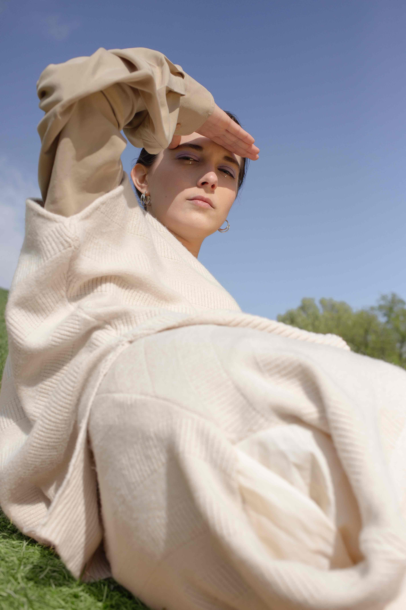
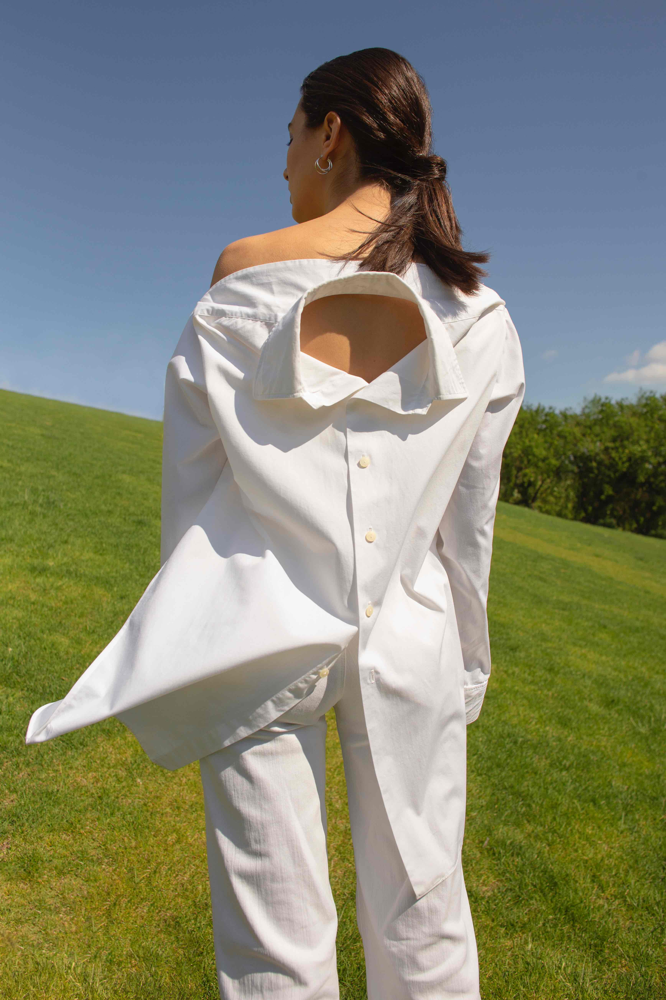
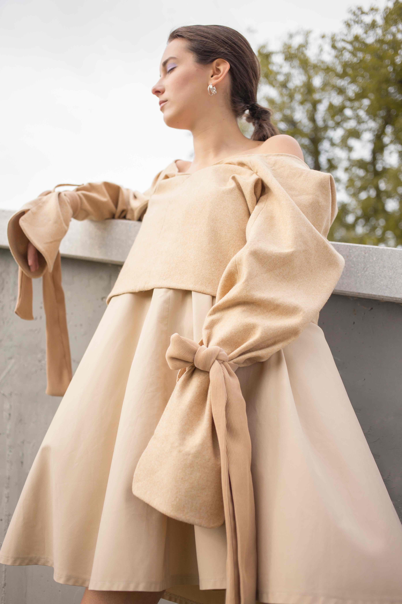
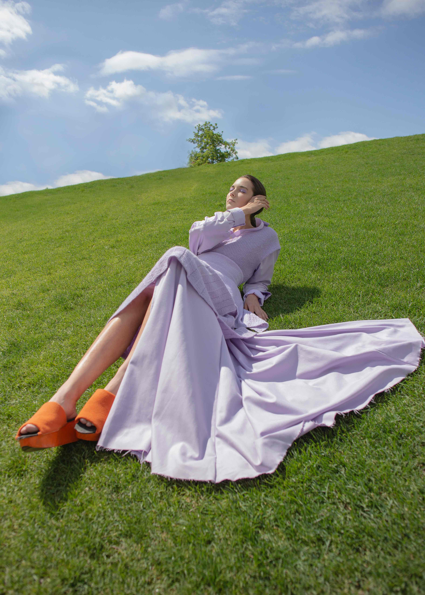
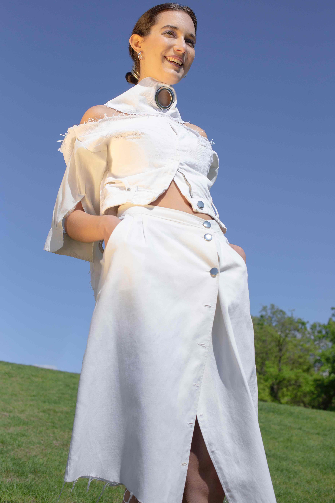
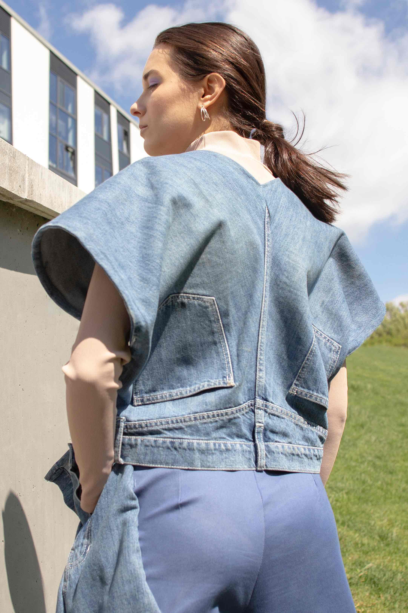
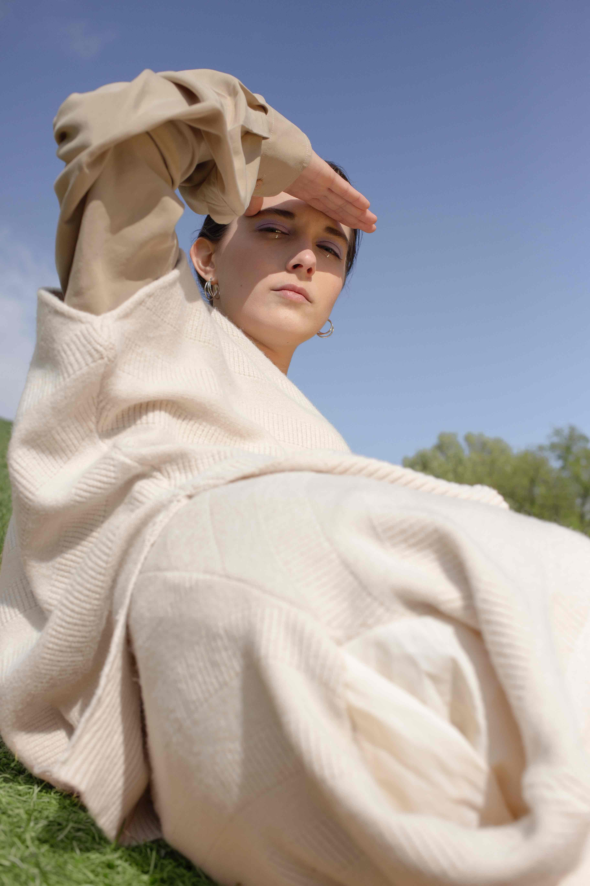
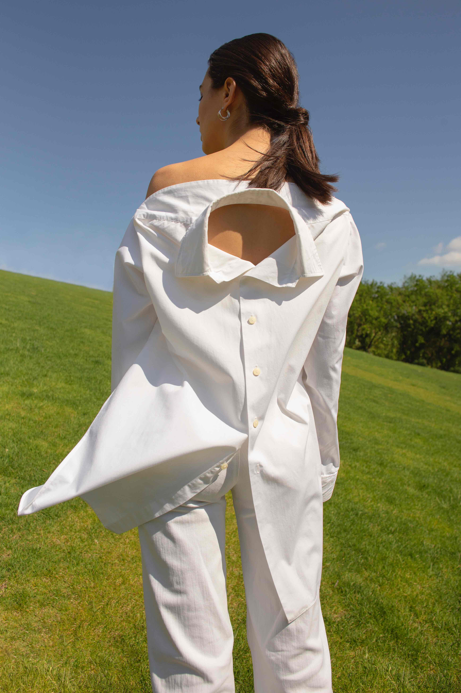
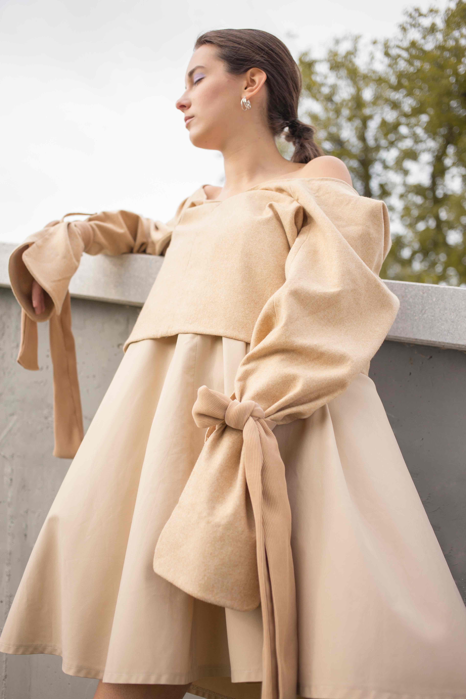
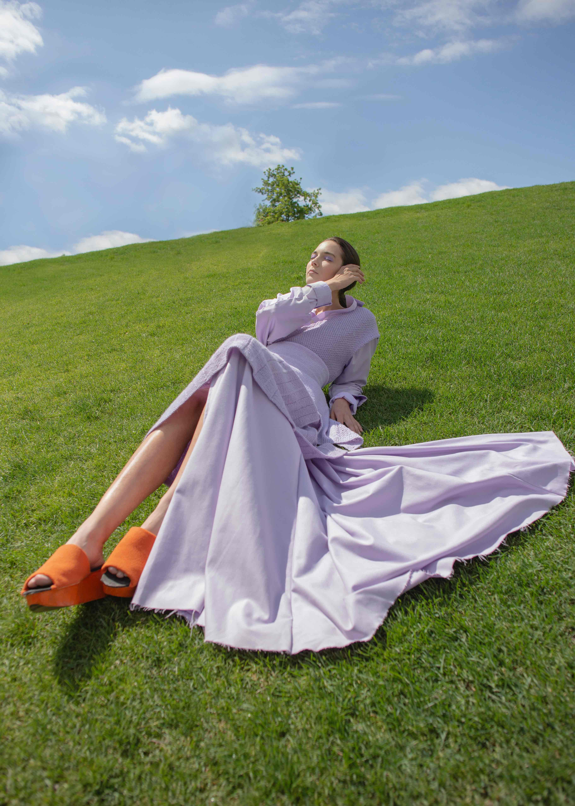
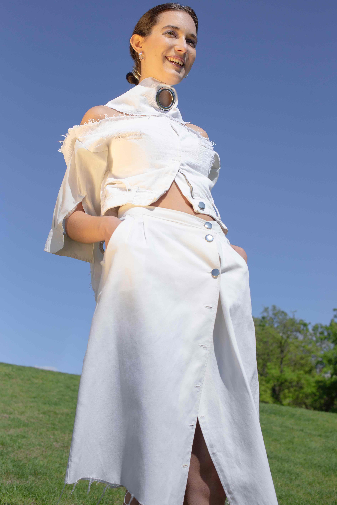
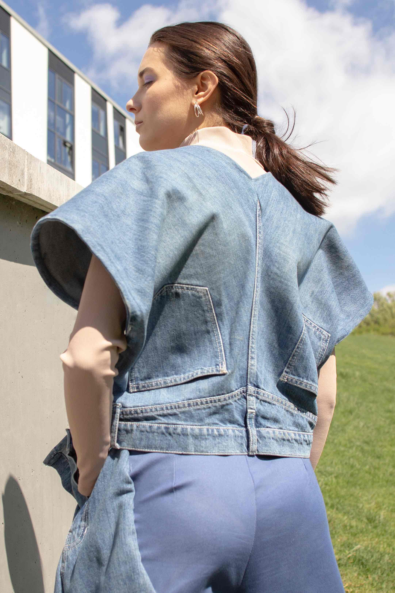